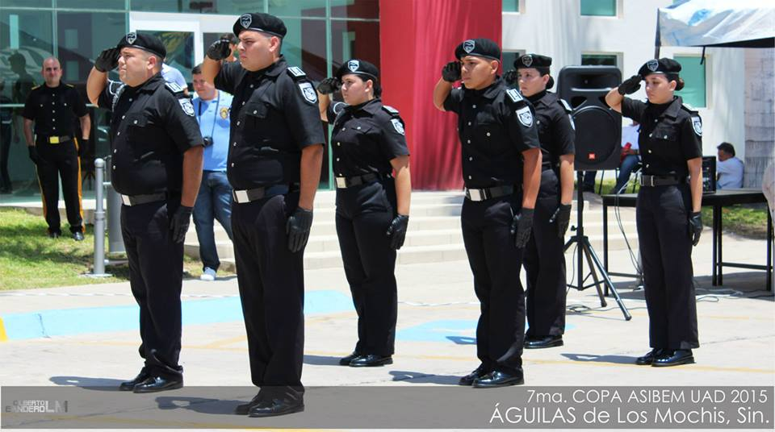
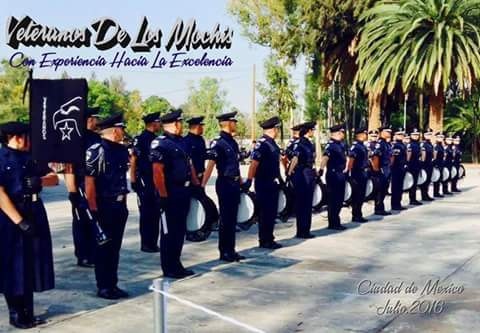
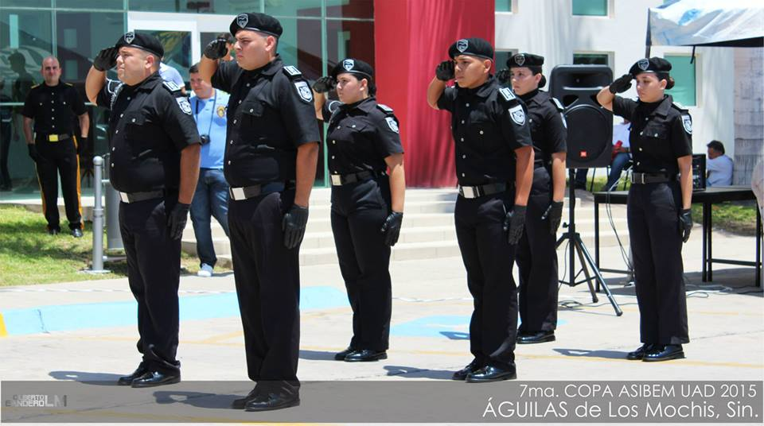
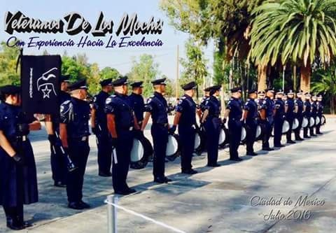
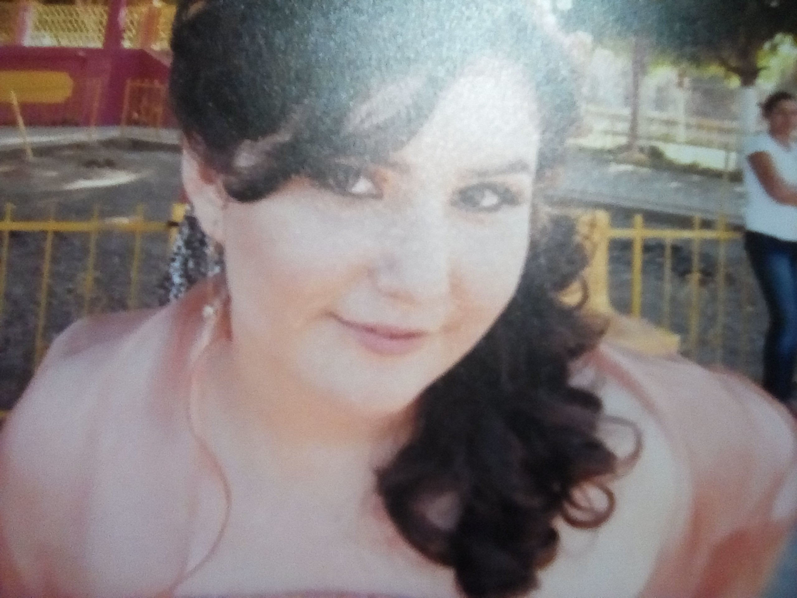

FLORA CAROLINA MORENO CAMACHO
 



PASATIEMPO
Cuando estuve en el kínder fuí comandante de la escolta, en 5to de primaria me habían elegido para formar parte pero me dijeron
que tenía que aprenderme unas hojas sobre la bandera y como a mí no me gustaba leer preferí no entrar a la escolta, estando en
la secundaria, al grupo que le tocaban los honores eran los que sacaban la escolta por lo general salía yo en ella, entrando al
bachillerato entre para liberar el servicio y fue tanto el gusto que le agarré que de ahí mismo me llamaron para formar parte de
una banda de guerra como guión, de ahí empecé a competir en concursos nacionales viajando por la república, hoy en día tengo 5
años perteneciendo a este medio donde soy reconocida como una figura bandera en el país, actualmente perteneciente a:
- Escolta de bandera del instituto tecnológico de los Mochis
- BdG Veteranos de los Mochis
- Escolta de bandera ADLM

QUINCE AÑOS
Quizás no seamos una familia de mucho dinero pero cuando menos hay más creatividad sale, a mí no me iban a hacer una fiesta en grande como la de
mis hermanas porque cuando me toco cumplirlos a mí no había suficiente, mi mama dijo que me haría una cenita, pero esa cenita fue creciendo con
el apoyo de mi familia y hasta la fecha ha sido la fiesta más disfrutada por todos los miembros de ella.